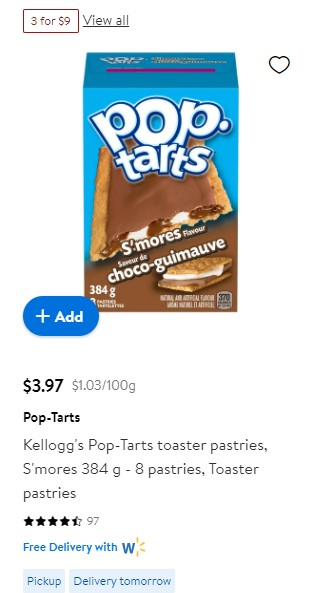

These are just a few spots where finding Smore's Poptarts, (as long as they aren't sold out), is an absolute breeze. Up and down the aisles, as far as the eye can see, this delicious brown and white toaster pastry can be bought from anywhere from $4-$20 a box, with each box containing 8 tarts.
Shown in the prices above, we can see that the demand, especially on Amazonm, is at a consisten high, with most offers nearing out of stock. Clearly the people of the world understand the incredible taste of the Smore's Poptart, and aren't bothered paying an outrageous price on top of shipping.
Click Here To Buy Some S'Mores Poptarts Already!!!